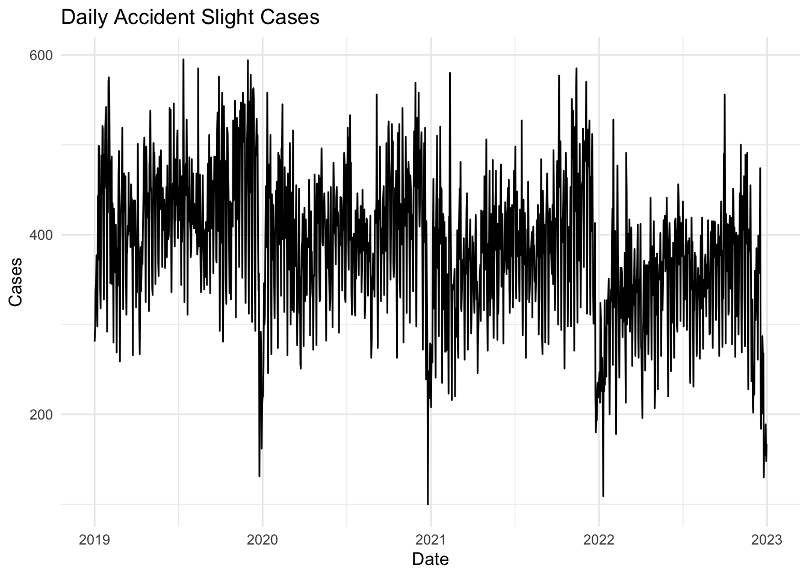
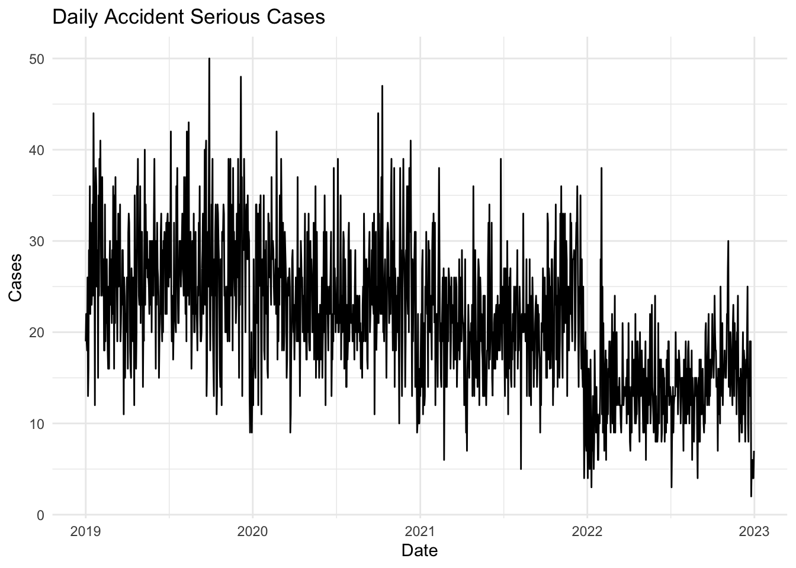
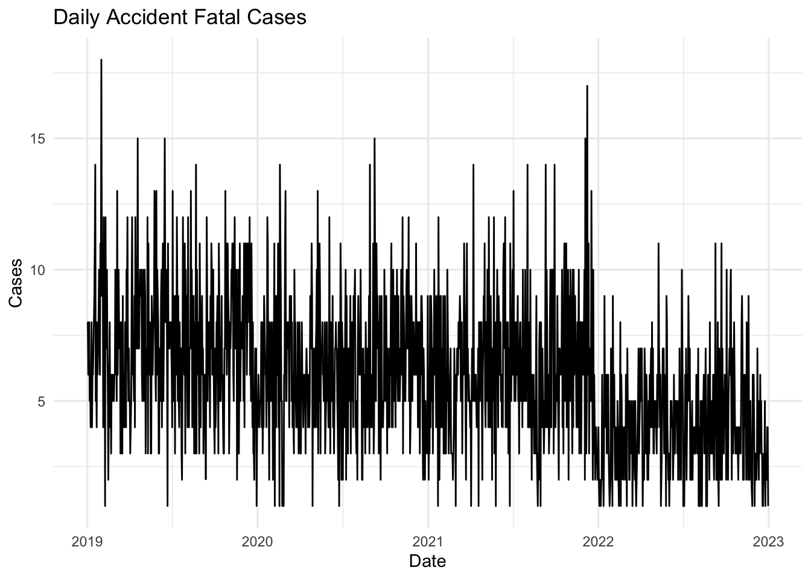
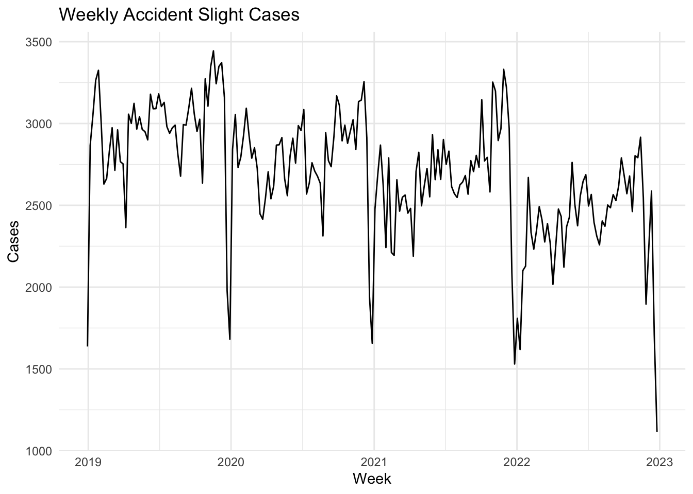
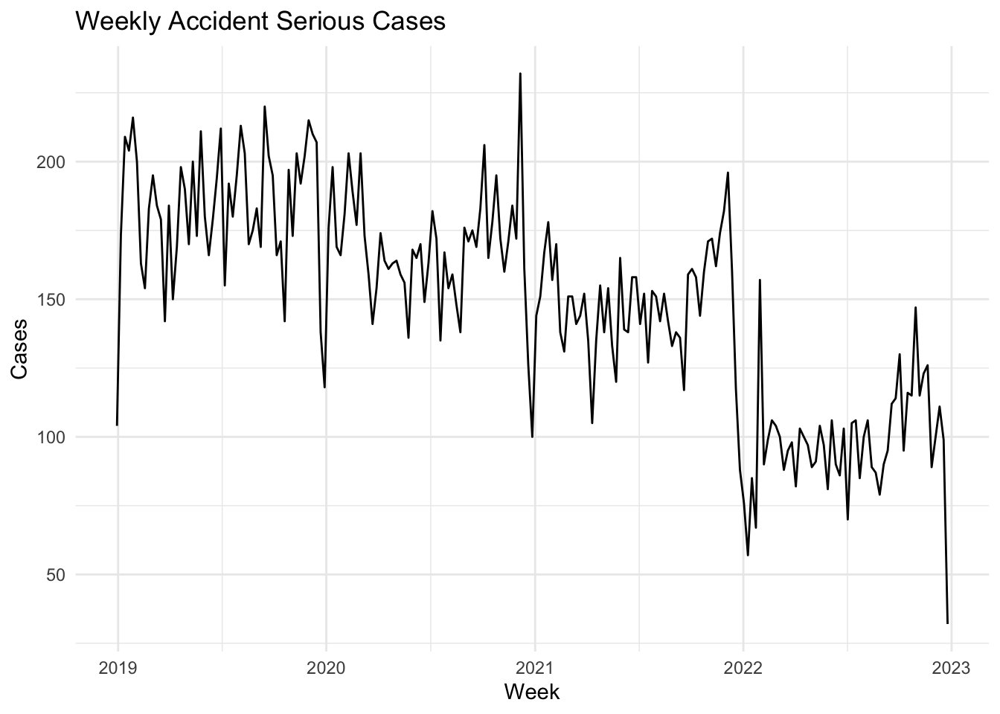
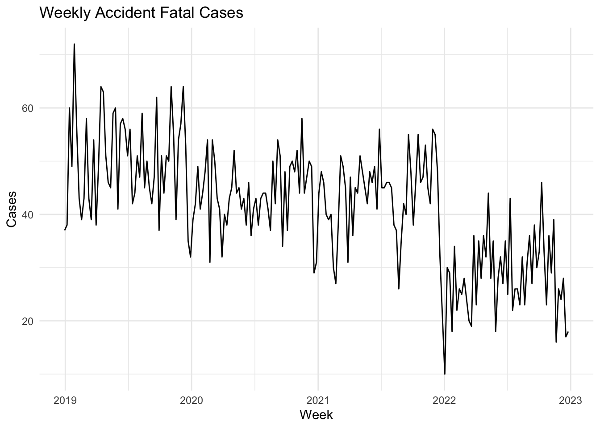
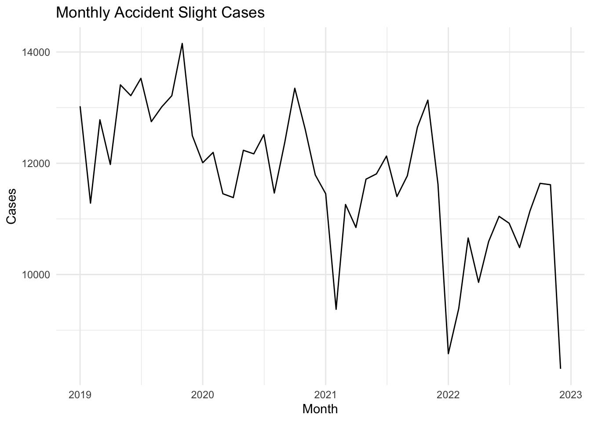
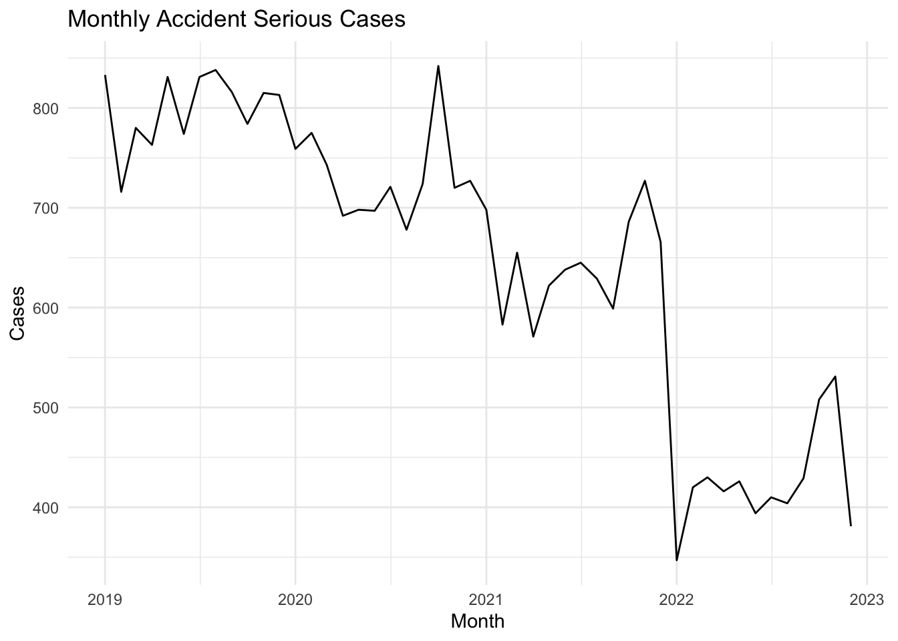
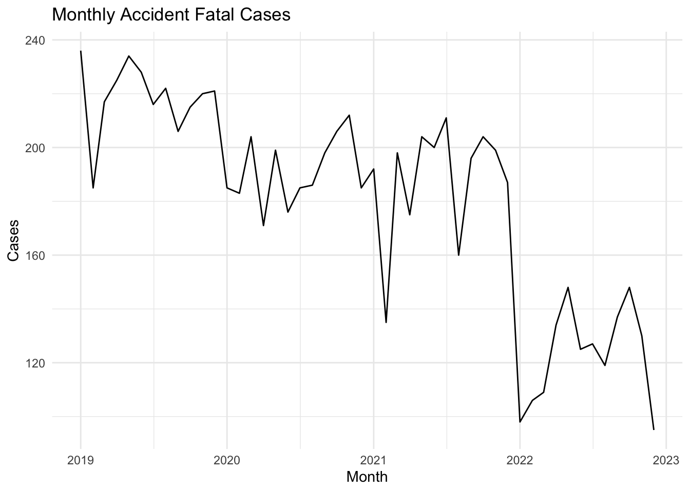

Below is your code with added comments and descriptions. I’ve maintained the Quarto syntax and structured the comments for clarity and understanding of each code block:
---title:"ST565 Final Project"author:-"Brian Cervantes Alvarez"date:"03-10-2023"format: OSULatexTheme-pdfexecute:warning:falsemessage:falseeditor: visual---
Introduction
This section sets up the document, including metadata like the title, author, and date. It specifies the output format and execution parameters for the Quarto document.
Time Series Analysis
Loading Datasets
# Load necessary libraries for data manipulation and visualizationlibrary(tidyverse)
── Attaching core tidyverse packages ──────────────────────── tidyverse 2.0.0 ──
✔ dplyr 1.1.4 ✔ readr 2.1.5
✔ forcats 1.0.0 ✔ stringr 1.5.1
✔ ggplot2 3.5.0 ✔ tibble 3.2.1
✔ lubridate 1.9.3 ✔ tidyr 1.3.1
✔ purrr 1.0.2
── Conflicts ────────────────────────────────────────── tidyverse_conflicts() ──
✖ dplyr::filter() masks stats::filter()
✖ dplyr::lag() masks stats::lag()
ℹ Use the conflicted package (<http://conflicted.r-lib.org/>) to force all conflicts to become errors
# Reading datasets from various CSV files for accident analysisurbanRuralArea <-read_csv("ubar_rural_area.csv")
Rows: 660654 Columns: 1
── Column specification ────────────────────────────────────────────────────────
Delimiter: ","
chr (1): Urban_or_Rural_Area
ℹ Use `spec()` to retrieve the full column specification for this data.
ℹ Specify the column types or set `show_col_types = FALSE` to quiet this message.
vehicleType <-read_csv("vehicule_type.csv")
Rows: 657364 Columns: 1
── Column specification ────────────────────────────────────────────────────────
Delimiter: ","
chr (1): Vehicle_Type
ℹ Use `spec()` to retrieve the full column specification for this data.
ℹ Specify the column types or set `show_col_types = FALSE` to quiet this message.
Rows: 423735 Columns: 1
── Column specification ────────────────────────────────────────────────────────
Delimiter: ","
chr (1): Weather_Conditions
ℹ Use `spec()` to retrieve the full column specification for this data.
ℹ Specify the column types or set `show_col_types = FALSE` to quiet this message.
Rows: 660669 Columns: 1
── Column specification ────────────────────────────────────────────────────────
Delimiter: ","
dbl (1): Number_of_Vehicles
ℹ Use `spec()` to retrieve the full column specification for this data.
ℹ Specify the column types or set `show_col_types = FALSE` to quiet this message.
Rows: 659943 Columns: 1
── Column specification ────────────────────────────────────────────────────────
Delimiter: ","
chr (1): Road_Surface_Conditions
ℹ Use `spec()` to retrieve the full column specification for this data.
ℹ Specify the column types or set `show_col_types = FALSE` to quiet this message.
Rows: 443385 Columns: 1
── Column specification ────────────────────────────────────────────────────────
Delimiter: ","
chr (1): Road_Type
ℹ Use `spec()` to retrieve the full column specification for this data.
ℹ Specify the column types or set `show_col_types = FALSE` to quiet this message.
longitude <-read_csv("longitutde_accident.csv")
Rows: 660653 Columns: 1
── Column specification ────────────────────────────────────────────────────────
Delimiter: ","
dbl (1): Longitude
ℹ Use `spec()` to retrieve the full column specification for this data.
ℹ Specify the column types or set `show_col_types = FALSE` to quiet this message.
latitude <-read_csv("latitutde_accident.csv")
Rows: 660653 Columns: 1
── Column specification ────────────────────────────────────────────────────────
Delimiter: ","
dbl (1): Latitude
ℹ Use `spec()` to retrieve the full column specification for this data.
ℹ Specify the column types or set `show_col_types = FALSE` to quiet this message.
Rows: 603638 Columns: 1
── Column specification ────────────────────────────────────────────────────────
Delimiter: ","
chr (1): Light_Conditions
ℹ Use `spec()` to retrieve the full column specification for this data.
ℹ Specify the column types or set `show_col_types = FALSE` to quiet this message.
accidentDate <-read_csv("data_accident.csv")
Rows: 625000 Columns: 1
── Column specification ────────────────────────────────────────────────────────
Delimiter: ","
date (1): Accident_Date
ℹ Use `spec()` to retrieve the full column specification for this data.
ℹ Specify the column types or set `show_col_types = FALSE` to quiet this message.
Rows: 623498 Columns: 1
── Column specification ────────────────────────────────────────────────────────
Delimiter: ","
chr (1): District_Area
ℹ Use `spec()` to retrieve the full column specification for this data.
ℹ Specify the column types or set `show_col_types = FALSE` to quiet this message.
accidentSeverity <-read_csv("accident_fatal.csv")
Rows: 660669 Columns: 1
── Column specification ────────────────────────────────────────────────────────
Delimiter: ","
chr (1): Accident_Severity
ℹ Use `spec()` to retrieve the full column specification for this data.
ℹ Specify the column types or set `show_col_types = FALSE` to quiet this message.
# Add a unique index to each dataset to facilitate a comprehensive joinurbanRuralArea <- urbanRuralArea %>%mutate(index =row_number())vehicleType <- vehicleType %>%mutate(index =row_number())weatherConditions <- weatherConditions %>%mutate(index =row_number())vehiclesInCollision <- vehiclesInCollision %>%mutate(index =row_number())roadSurfaceCondition <- roadSurfaceCondition %>%mutate(index =row_number())roadType <- roadType %>%mutate(index =row_number())longitude <- longitude %>%mutate(index =row_number())latitude <- latitude %>%mutate(index =row_number())darknessLevel <- darknessLevel %>%mutate(index =row_number())accidentDate <- accidentDate %>%mutate(index =row_number())districtArea <- districtArea %>%mutate(index =row_number())accidentSeverity <- accidentSeverity %>%mutate(index =row_number())# Merge all datasets into a single dataset # using a full join on the 'index' column# Then, remove the 'index' column as it is no longer needed after joiningaccidentDs <- accidentSeverity %>%full_join(urbanRuralArea, by ='index') %>%full_join(vehicleType, by ='index') %>%full_join(weatherConditions, by ='index') %>%full_join(vehiclesInCollision, by ='index') %>%full_join(roadSurfaceCondition, by ='index') %>%full_join(roadType, by ='index') %>%full_join(longitude, by ='index') %>%full_join(latitude, by ='index') %>%full_join(darknessLevel, by ='index') %>%full_join(accidentDate, by ='index') %>%full_join(districtArea, by ='index') %>% dplyr::select(-index)# Optional: Save the fully joined dataset to a new CSV file# write_csv(accidentDs, "fullAccidentRecord.csv")
Missing Value Investigation (To be explored more regarding MAR|MNAR later)
# Check the first few rows to understand the structure of the combined datasethead(accidentDs, 5)
# Calculate the total missing values for each column in the datasetmissingValues <- accidentDs %>%summarise_all(~sum(is.na(.)))# Display the missing value count for each columnprint(missingValues)
# Validate the dataset post-cleaning for specific groups, excluding # 'Weather_Conditions' and 'Road_Type'accidentDs %>%group_by(Accident_Severity) %>%summarise(cases =n())
# A tibble: 14 × 2
Vehicle_Type cases
<chr> <int>
1 Agricultural vehicle 1947
2 Car 497986
3 Data missing or out of range 6
4 Goods 7.5 tonnes mgw and over 17307
5 Goods over 3.5t. and under 7.5t 6096
6 Minibus (8 - 16 passenger seats) 1976
7 Motorcycle 125cc and under 15269
8 Motorcycle 50cc and under 7603
9 Motorcycle over 500cc 25657
10 Other vehicle 5637
11 Pedal cycle 197
12 Ridden horse 4
13 Taxi/Private hire car 13293
14 Van / Goods 3.5 tonnes mgw or under 10660
# A tibble: 385 × 2
District_Area cases
<chr> <int>
1 Aberdeen City 1323
2 Aberdeenshire 1930
3 Adur 619
4 Allerdale 1128
5 Alnwick 232
6 Amber Valley 1347
7 Angus 796
8 Argyll and Bute 836
9 Arun 1376
10 Ashfield 1395
# ℹ 375 more rows
# Exclude 'Weather_Conditions' and 'Road_Type' from # further analysis due to significant missing valuesaccidentDs <- accidentDs %>% dplyr::select(-c(Weather_Conditions, Road_Type))# Recalculate and print missing values to ensure cleanliness of the datamissingValues <- accidentDs %>%summarise_all(~sum(is.na(.)))print(missingValues)
library(lubridate)# Clean the dataset by filtering out irrelevant rows # and converting certain columns to factorsaccidentDs <- accidentDs %>%filter(Urban_or_Rural_Area !="Unallocated", Vehicle_Type !="Data missing or out of range") %>%mutate(Urban_or_Rural_Area =factor(Urban_or_Rural_Area),Vehicle_Type =factor(Vehicle_Type),Accident_Severity =factor(Accident_Severity),Road_Surface_Conditions =factor(Road_Surface_Conditions),Light_Conditions =factor(Light_Conditions),District_Area =factor(District_Area))# Ensure Accident_Date is a Data class,# Add Month and Week DatesaccidentDs <- accidentDs %>%mutate(Accident_Date =as.Date(Accident_Date), Month =floor_date(Accident_Date, "month"),Week =floor_date(Accident_Date, "week"))
Exploratory Data Analysis
Looking at Daily Accident Severity Time Series Plots
# Analyze daily accident severity trends to identify # any daily patterns or anomaliesaccidentDs %>%filter(Accident_Severity =="Slight") %>%group_by(Accident_Severity, Accident_Date) %>%summarise(Count =n(), .groups ='drop') %>%ggplot(aes(x = Accident_Date, y = Count)) +geom_line() +labs(title ="Daily Accident Slight Cases", x ="Date", y ="Cases") +theme_minimal()

accidentDs %>%filter(Accident_Severity =="Serious") %>%group_by(Accident_Severity, Accident_Date) %>%summarise(Count =n(), .groups ='drop') %>%ggplot(aes(x = Accident_Date, y = Count)) +geom_line() +labs(title ="Daily Accident Serious Cases", x ="Date", y ="Cases") +theme_minimal()

accidentDs %>%filter(Accident_Severity =="Fatal") %>%group_by(Accident_Severity, Accident_Date) %>%summarise(Count =n(), .groups ='drop') %>%ggplot(aes(x = Accident_Date, y = Count)) +geom_line() +labs(title ="Daily Accident Fatal Cases", x ="Date", y ="Cases") +theme_minimal()

Looking at Weekly Accident Severity Time Series Plots
# Plot weekly trends for each accident severity categoryaccidentDs %>%filter(Accident_Severity =="Slight") %>%group_by(Accident_Severity, Week) %>%summarise(Count =n(), .groups ='drop') %>%ggplot(aes(x = Week, y = Count)) +geom_line() +labs(title ="Weekly Accident Slight Cases", x ="Week", y ="Cases") +theme_minimal()

accidentDs %>%filter(Accident_Severity =="Serious") %>%group_by(Accident_Severity, Week) %>%summarise(Count =n(), .groups ='drop') %>%ggplot(aes(x = Week, y = Count)) +geom_line() +labs(title ="Weekly Accident Serious Cases", x ="Week", y ="Cases") +theme_minimal()

accidentDs %>%filter(Accident_Severity =="Fatal") %>%group_by(Accident_Severity, Week) %>%summarise(Count =n(), .groups ='drop') %>%ggplot(aes(x = Week, y = Count)) +geom_line() +labs(title ="Weekly Accident Fatal Cases", x ="Week", y ="Cases") +theme_minimal()

Looking at Monthly Accident Severity Time Series Plots
# Load the lubridate package for date-time manipulationlibrary(lubridate)# Enhance the dataset with month and week columns for time series analysisaccidentDs <- accidentDs %>%mutate(Accident_Date =as.Date(Accident_Date), Month =floor_date(Accident_Date, "month"),Week =floor_date(Accident_Date, "week"))# Plot monthly trends for each accident severity categoryaccidentDs %>%filter(Accident_Severity =="Slight") %>%group_by(Accident_Severity, Month) %>%summarise(Count =n(), .groups ='drop') %>%ggplot(aes(x = Month, y = Count)) +geom_line() +labs(title ="Monthly Accident Slight Cases", x ="Month", y ="Cases") +theme_minimal()

accidentDs %>%filter(Accident_Severity =="Serious") %>%group_by(Accident_Severity, Month) %>%summarise(Count =n(), .groups ='drop') %>%ggplot(aes(x = Month, y = Count)) +geom_line() +labs(title ="Monthly Accident Serious Cases", x ="Month", y ="Cases") +theme_minimal()

accidentDs %>%filter(Accident_Severity =="Fatal") %>%group_by(Accident_Severity, Month) %>%summarise(Count =n(), .groups ='drop') %>%ggplot(aes(x = Month, y = Count)) +geom_line() +labs(title ="Monthly Accident Fatal Cases", x ="Month", y ="Cases") +theme_minimal()

Citation
This section includes the citation for the dataset used in this project.